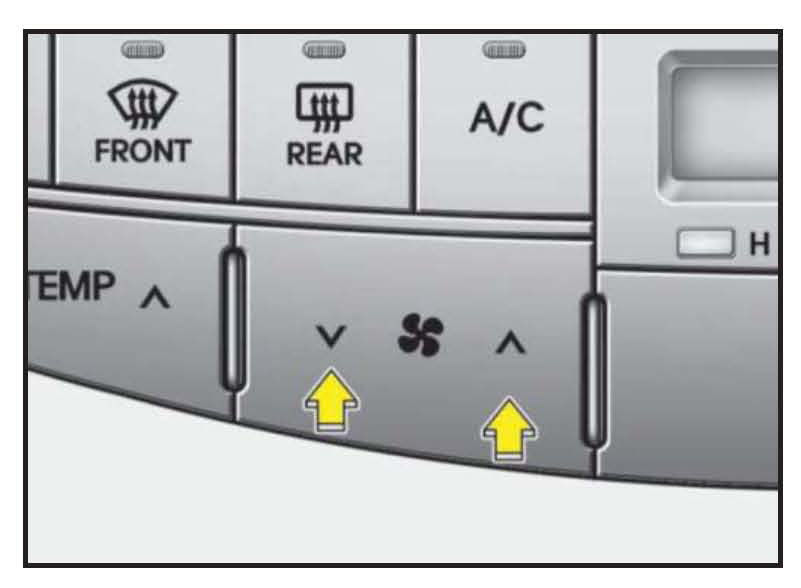
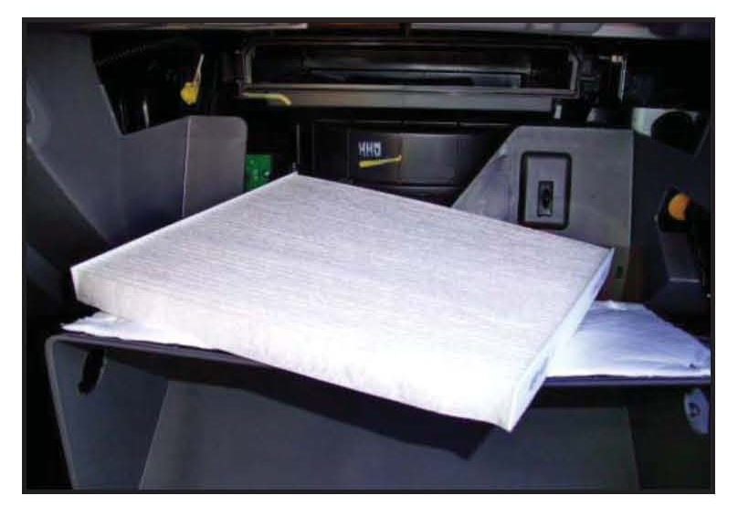
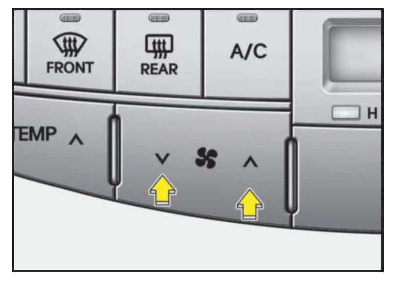
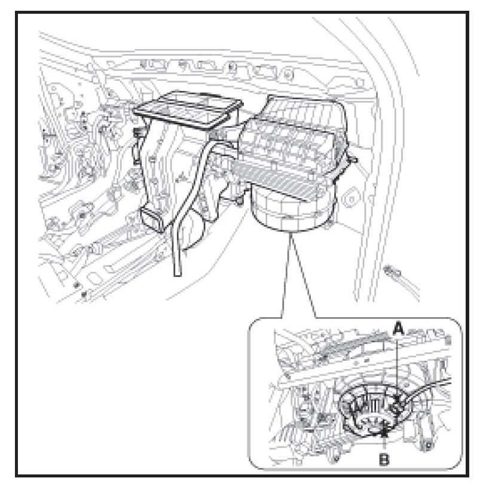
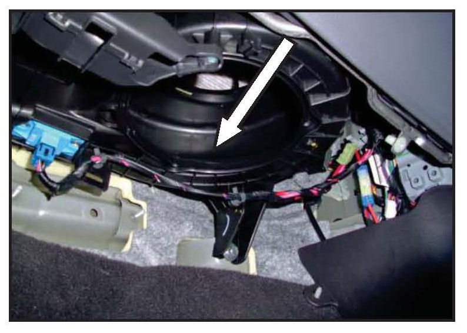
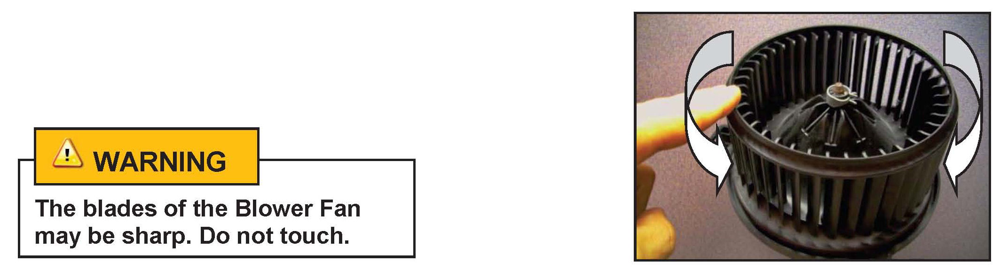
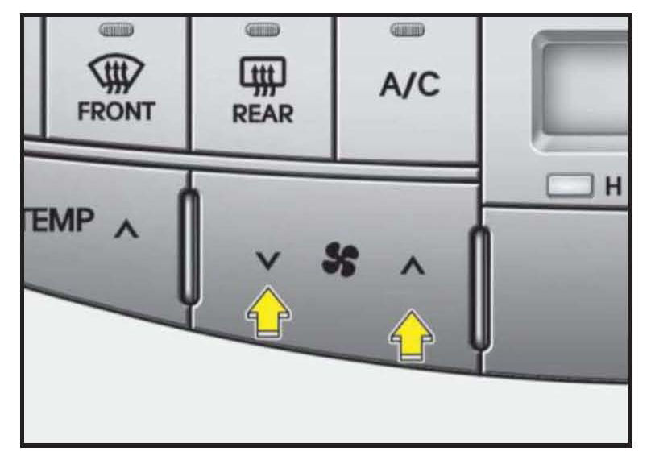

A/C - Cabin Air Filter/Blower Motor Service Precautions
GROUPHVAC
NUMBER
12-HA-001
DATE
OCTOBER 2012
MODEL(S)
ALL
SUBJECT:
CABIN AIR FILTER / BLOWER MOTOR REPLACEMENT
SERVICE PROCEDURE
Description:
During the Cabin Air Filter replacement procedure, it is important not to allow foreign debris to fall into the Blower Motor Unit as this may cause the Blower Motor to operate improperly or cause abnormal
noise.
This bulletin explains the proper procedures to:
1. Inspect for and remove foreign debris from the Blower Unit during Cabin Air Filter replacement.
2. Inspect and replace the Blower Motor.
NOTE:
^ Rough handling of the Cabin Air Filter may cause debris to fall into the Blower Unit which can impact Blower Motor performance or cause noisy operation. Both can be avoided by carefully handling the Cabin Air Filter during replacement.
^ Use caution during Cabin Air Filter replacement for vehicles with prolonged operation beyond recommended replacement intervals or vehicles that are operated in areas with high amounts of air intake debris. There may be a significant amount of debris on top of the filter.
^ Warranty coverage does not apply to procedures related to the replacement of the Blower Motor due to entry of debris into the Blower Fan or Blower Unit during Cabin Air Filter replacement.
^ Blower Motors replaced under warranty will be subject to WTC Part Return Request. Claim adjustment may occur if the inspection of the Blower Motor yields an NTF (No Trouble Found) result.
Applicable Vehicles:
^ All vehicles with a Cabin Air Filter
Warranty Information: Does not apply if caused by debris or foreign objects.
Tools Required: Refer to applicable Shop Manual
Cabin Air Filter Replacement:

1. Check for proper Blower Motor operation.
^ Operate the HVAC system at each fan speed while listening carefully to be sure the Blower Motor spins freely and without abnormal noise.
^ If issues are noted, additional steps must be taken after the Cabin Air Filter replacement.

2. Replace the Cabin Air Filter according to the procedure in the applicable Shop Manual.

3. Finish the procedure with a final verification of proper Blower Motor operation.
^ Operate the HVAC system at each fan speed while listening carefully to be sure the Blower Motor spins freely and without abnormal noise.
^ If the Blower Motor operates correctly and there are no issues, the filter replacement procedure is complete.
^ If the Blower Motor does not operate correctly or there are abnormal noises, perform the following procedure to repair the vehicle.
Blower Motor Inspection and Replacement:

1. Remove the Blower Motor according to the applicable Shop Manual.

2. Inspect the inside of the Blower Unit for debris.
^ If any debris is found, remove it with a vacuum cleaner or by hand with a damp shop towel.
^ Do not use compressed air as it may force debris further into the system.

3. With the Blower Motor removed, rotate the Blower Fan by hand in both directions to check for any rough spots or excessive wobbling while listening for abnormal noises.
^ If the Blower Motor is operating properly, reinstall the parts in reverse order of removal.
^ If the Blower Motor is not operating properly, replace the unit according to the procedure found in the applicable Shop Manual.

4. Finish the procedure by verifying the repair.
^ Operate the HVAC System and listen carefully to be sure the Blower Motor spins properly at each fan speed and is free of any abnormal noises.